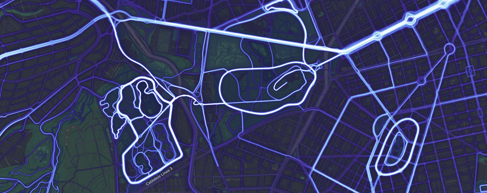
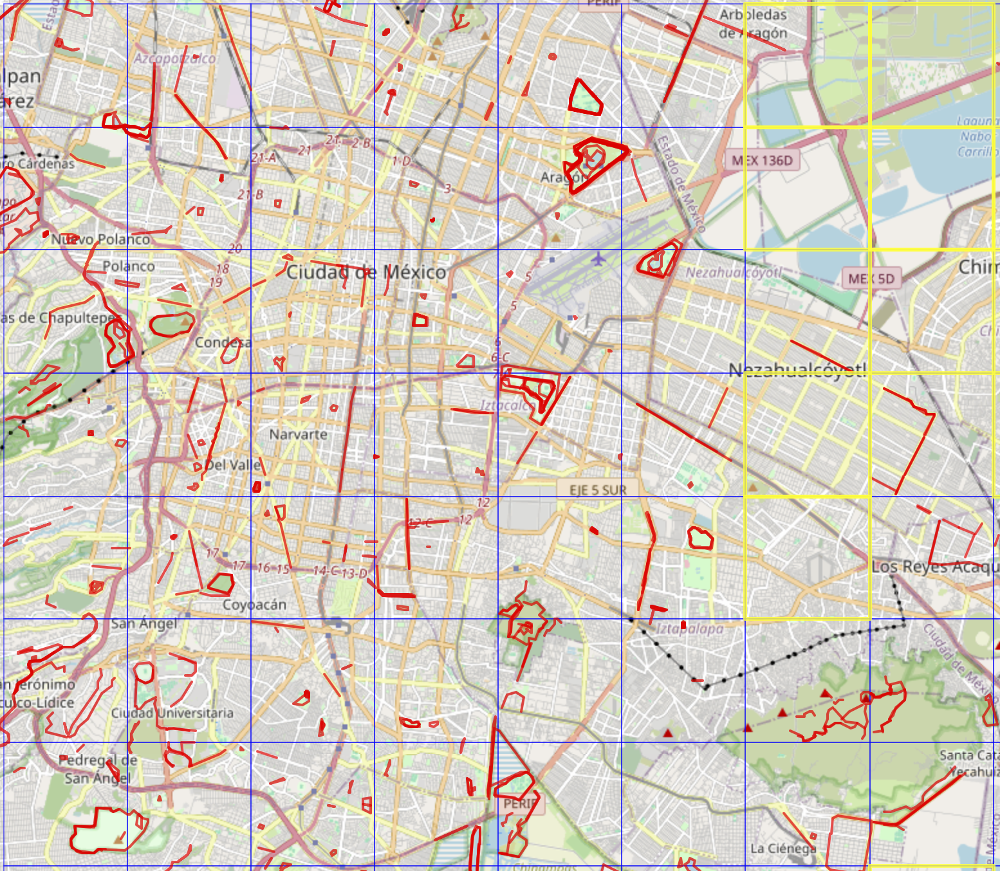

Dónde corren los chilangos? Strava nos responde
Como científico del dato y corredor amateur, decidí usar la API de Strava para analizar cuáles son las rutas más populares para correr en la Ciudad de México. El objetivo: descubrir las zonas más concurridas por los runners y dar unas estadísticas interesantes en el camino.
Empecemos por decir que Strava es una app que… Para motivar a su comunidad Strava define segmentos…
La API de Strava
Strava proporciona un endpoint llamado /segments/explore, el cual devuelve los segmentos más populares dentro de un área geográfica determinada. Sin embargo, este endpoint solo devuelve hasta 10 resultados por llamada. Para evitar esta limitación, dividí la ciudad en una cuadrícula y consulté múltiples bounding boxes:
def split_bounds(sw_lat, sw_lon, ne_lat, ne_lon, n=10):
"""Divide la caja geográfica en una cuadrícula n x n."""
lats = np.linspace(sw_lat, ne_lat, n + 1)
lons = np.linspace(sw_lon, ne_lon, n + 1)
boxes = []
for i in range(n):
for j in range(n):
box = (lats[i], lons[j], lats[i + 1], lons[j + 1])
boxes.append(box)
return boxesGracias a este procedimiento, recuperé decenas de segmentos únicos dentro del área aproximada de la CDMX.

📍 Aquí puedes explorar un mapa con los segmentos más populares recuperados:
👉 (inserta aquí el HTML generado con tu visualización interactiva)
Clasificando las rutas
Cada segmento viene acompañado de metadata, incluyendo su nombre, pendiente media, elevación ganada, tipo de actividad y coordenadas de inicio y fin. Usando esta información, desarrollé un conjunto de heurísticas para clasificarlos en:
- 🏃 Pistas: segmentos planos, con nombres que contienen palabras clave como “pista” o “track”.
- 🌳 Parques: segmentos ubicados dentro o cerca de zonas verdes conocidas.
- 🚦 Calles: todo lo que no entra en las categorías anteriores.
Aquí un fragmento del código de clasificación:
def classify_segment(segment):
name = segment['name'].lower()
elev = segment['elevation_gain']
if 'pista' in name or 'track' in name:
return 'Pista'
elif elev < 10 and any(park in name for park in ['bosque', 'parque', 'forest']):
return 'Parque'
else:
return 'Calle'Los hallazgos
Después de limpiar, clasificar y visualizar los datos, encontré lo siguiente:
- El Bosque de Chapultepec sigue siendo rey: varios de los segmentos más populares están ahí.
- Hay rutas en pistas poco conocidas que tienen mucho tráfico según Strava.
- Algunas calles clave —como Reforma o la ciclovía Insurgentes— concentran mucha actividad.
🗺️ Mira aquí el mapa interactivo de rutas categorizadas:
👉 (espacio para HTML o iframe de visualización con colores por categoría)
Conclusión
Este pequeño proyecto combinó scraping controlado de APIs, análisis geoespacial y visualización interactiva para responder una pregunta simple: ¿dónde se corre más en la CDMX? Además de ayudarme a explorar herramientas como requests, pandas, folium y plotly, me permitió juntar mis dos pasiones: el análisis de datos y correr.
💡 ¿Te gustaría correr una ruta nueva esta semana? Este análisis puede ayudarte a decidir.
Si estás interesado en el código completo, puedes verlo en mi GitHub o contactarme directamente. Si tienes ideas para expandir el análisis — por ejemplo, agregando frecuencia por hora o diferenciando entre días de semana y fines de semana — ¡estaré feliz de colaborar!